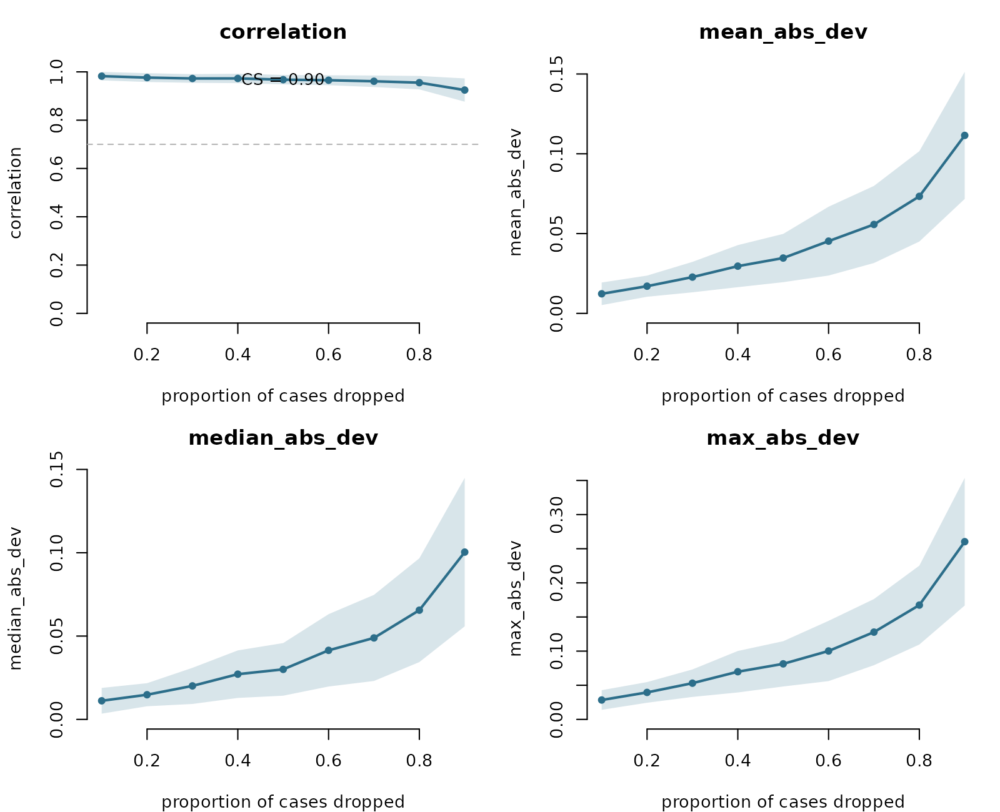
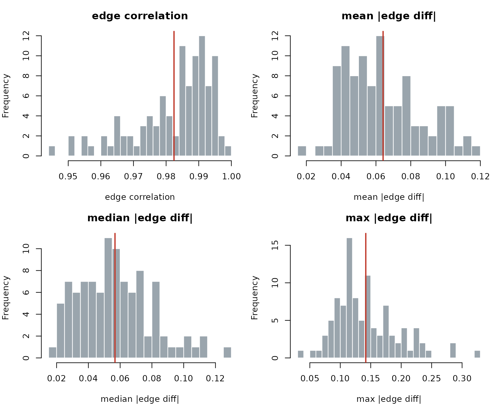

Edge-weight stability and split-half reliability
Source:vignettes/network-reliability.Rmd
network-reliability.Rmdnet_stability() tells you whether centrality
rankings survive case-dropping. This vignette covers the two
complementary robustness checks for the edge structure itself,
both estimator-agnostic and base-R only:
-
casedrop_reliability()— the edge-weight CS-coefficient: how many cases can be dropped before the whole edge-weight vector stops correlating with the full-sample one. -
network_reliability()— split-half reliability: split the sample, estimate a network on each half, and measure how alike the two edge structures are.
Each verb takes raw data and returns a tidy
data.frame you print directly — one call, no table
assembly, no accessors.
We use the bundled SRL_Claude self-regulated-learning
data (300 respondents, five MSLQ subscales).
Edge-weight case-dropping stability
One line in, a tidy table out — one row per metric per drop proportion, with the CS-coefficient on the header line. No arguments needed:
cd <- casedrop_reliability(SRL_Claude)
cd
#> # edge-weight stability: glasso | CS = 0.90 (spearman cor >= 0.70 at 95%)
#> metric drop_prop mean sd
#> 1 mean_abs_dev 0.1 0.01210425 0.006842117
#> 2 mean_abs_dev 0.2 0.01890183 0.009083151
#> 3 mean_abs_dev 0.3 0.02149010 0.011285685
#> 4 mean_abs_dev 0.4 0.02698512 0.011699679
#> 5 mean_abs_dev 0.5 0.03276844 0.015423245
#> 6 mean_abs_dev 0.6 0.04346120 0.019907911
#> 7 mean_abs_dev 0.7 0.05458419 0.019680164
#> 8 mean_abs_dev 0.8 0.07213005 0.028998661
#> 9 mean_abs_dev 0.9 0.11435088 0.041262261
#> 10 median_abs_dev 0.1 0.01087812 0.007526945
#> 11 median_abs_dev 0.2 0.01662288 0.009894813
#> 12 median_abs_dev 0.3 0.01908751 0.012849561
#> 13 median_abs_dev 0.4 0.02328488 0.012107749
#> 14 median_abs_dev 0.5 0.02834539 0.016470417
#> 15 median_abs_dev 0.6 0.03893692 0.021357956
#> 16 median_abs_dev 0.7 0.04928713 0.022370871
#> 17 median_abs_dev 0.8 0.06351304 0.032443227
#> 18 median_abs_dev 0.9 0.10422689 0.046986840
#> 19 correlation 0.1 0.97948093 0.018021434
#> 20 correlation 0.2 0.97726341 0.017660241
#> 21 correlation 0.3 0.97759688 0.018398626
#> 22 correlation 0.4 0.97386763 0.017045752
#> 23 correlation 0.5 0.96892625 0.019271040
#> 24 correlation 0.6 0.96668355 0.019234762
#> 25 correlation 0.7 0.95693658 0.020374142
#> 26 correlation 0.8 0.95491323 0.024149980
#> 27 correlation 0.9 0.91966867 0.047363394
#> 28 max_abs_dev 0.1 0.02782703 0.013178779
#> 29 max_abs_dev 0.2 0.04431631 0.019171457
#> 30 max_abs_dev 0.3 0.05063819 0.022210782
#> 31 max_abs_dev 0.4 0.06527754 0.027760050
#> 32 max_abs_dev 0.5 0.07769319 0.031758263
#> 33 max_abs_dev 0.6 0.09759017 0.038810847
#> 34 max_abs_dev 0.7 0.12589880 0.043891748
#> 35 max_abs_dev 0.8 0.16921224 0.061437261
#> 36 max_abs_dev 0.9 0.26500688 0.104004806plot() shows all four metrics against the drop
proportion, with ±1 SD bands; the correlation panel marks the acceptance
threshold and the CS-coefficient.
plot(cd)
A CS-coefficient of 0.5 or higher is the usual rule of thumb for an edge structure that can be interpreted with confidence.
Split-half reliability
Again, one line in, a tidy per-metric table out:
rel <- network_reliability(SRL_Claude)
rel
#> # split-half reliability: glasso | 100 iterations (50/50 split)
#> metric mean sd lower upper
#> 1 mean_abs_dev 0.06627639 0.02171653 0.02815164 0.1116450
#> 2 median_abs_dev 0.05988295 0.02509276 0.02254337 0.1177151
#> 3 correlation 0.98087163 0.01205178 0.95314515 0.9967315
#> 4 max_abs_dev 0.15049039 0.05247832 0.07070653 0.2594621plot() shows the distribution of each between-halves
metric across the split-half iterations, with the observed mean
marked.
plot(rel)
Any estimator, any grouping
Both verbs route every refit through
psychnet(method = ), so they work for any estimator — swap
in partial correlations, for instance:
casedrop_reliability(SRL_Claude, method = "pcor")
#> # edge-weight stability: pcor | CS = 0.90 (spearman cor >= 0.70 at 95%)
#> metric drop_prop mean sd
#> 1 mean_abs_dev 0.1 0.01374954 0.006163710
#> 2 mean_abs_dev 0.2 0.02074427 0.008350339
#> 3 mean_abs_dev 0.3 0.02862453 0.012542187
#> 4 mean_abs_dev 0.4 0.03697256 0.016075131
#> 5 mean_abs_dev 0.5 0.04476736 0.018782485
#> 6 mean_abs_dev 0.6 0.05202748 0.021329944
#> 7 mean_abs_dev 0.7 0.06657965 0.028145951
#> 8 mean_abs_dev 0.8 0.09268288 0.029827495
#> 9 mean_abs_dev 0.9 0.13221850 0.050644262
#> 10 median_abs_dev 0.1 0.01242777 0.006500654
#> 11 median_abs_dev 0.2 0.01879185 0.008807039
#> 12 median_abs_dev 0.3 0.02657092 0.014023598
#> 13 median_abs_dev 0.4 0.03202061 0.015519533
#> 14 median_abs_dev 0.5 0.03987237 0.019218652
#> 15 median_abs_dev 0.6 0.04692613 0.023265651
#> 16 median_abs_dev 0.7 0.06122611 0.029635390
#> 17 median_abs_dev 0.8 0.08513292 0.032739127
#> 18 median_abs_dev 0.9 0.11892263 0.054601446
#> 19 correlation 0.1 0.98872727 0.014128815
#> 20 correlation 0.2 0.98181818 0.015457576
#> 21 correlation 0.3 0.97442424 0.019935431
#> 22 correlation 0.4 0.97272727 0.019443997
#> 23 correlation 0.5 0.96496970 0.021920990
#> 24 correlation 0.6 0.96339394 0.022329153
#> 25 correlation 0.7 0.95490909 0.027623430
#> 26 correlation 0.8 0.94581818 0.031695231
#> 27 correlation 0.9 0.91587879 0.058317870
#> 28 max_abs_dev 0.1 0.03141089 0.013818425
#> 29 max_abs_dev 0.2 0.04574798 0.018085648
#> 30 max_abs_dev 0.3 0.06271644 0.024779371
#> 31 max_abs_dev 0.4 0.08360440 0.034010783
#> 32 max_abs_dev 0.5 0.10317951 0.041158020
#> 33 max_abs_dev 0.6 0.11575684 0.040777788
#> 34 max_abs_dev 0.7 0.14695022 0.056457437
#> 35 max_abs_dev 0.8 0.20013713 0.063476120
#> 36 max_abs_dev 0.9 0.28902632 0.099335625And both accept a psychnet_group (built with
psychnet(..., group = )), returning one result per
level.
Summary
| Verb | Question | Returns | Plot |
|---|---|---|---|
casedrop_reliability() |
How robust is the edge structure to dropping cases? | tidy df (metric × drop_prop) | four-metric curves + CS |
network_reliability() |
How reproducible is the edge structure across split-halves? | tidy df (one row per metric) | per-metric histograms |
Together with net_stability() (centrality rankings) and
net_boot() (edge accuracy intervals), these complete the
bootnet robustness toolkit in base R.